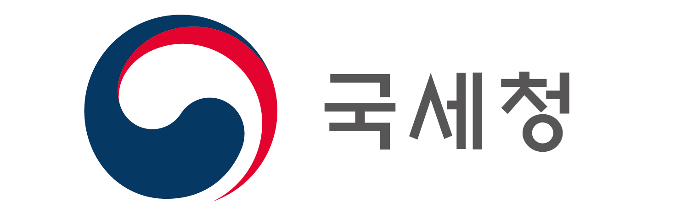

세대원 수는 1~10명 사이로 입력해주세요. (최대 10명)
고지거부 대상: -
고지거부 사유: -
세대원 수: -
읍면지역 여부: -
연간 소득금액: -
고지거부 신청 시 반드시 증빙서류를 첨부해야 합니다.
| 소득유형 | 증빙서류 |
|---|---|
| 농업소득 | 농지대장 또는 농산물 출하증명 |
| 사업소득 | 소득금액증명원(또는 원천징수영수증) and 사업자등록증명 |
| 근로소득 | 소득금액증명원(또는 원천징수영수증) and 재직증명(또는 건강보험자격득실확인서) |
| 연금소득 | 연금수급증명서(지급개시일, 월지급액이 기재되어야 함) |
| 금융소득 | 통장사본(1년 이상 정기적인 금융소득이 드러나야 함) |
| 임대소득 | 임대차계약서 and 임대료 통장사본(1년 이상) |
| 재산소득 | 등기부(부동산), 잔고증명서(금융) |
| 소득이전 | 계좌이체내역(1년 이상 정기적인 송금) |
고지거부는 등록의무자의 부양을 받지 않는 직계존비속의 재산고지를 거부하는 제도로서 반드시 아래 신청기간에 신청하고 공직자윤리위원회의 허가를 받아야 합니다.
| 구 분 | 신청기간 |
|---|---|
| 정기 신청 | 매년 1.1. ~ 1.31. |
| 재심사 신청 | 매년 1.1. ~ 3.31. |
| 수시 신청 | 승진·퇴직일 등으로부터 1개월 이내 |
* 재심사 신청은 고지거부 허가기간 중에만 신청가능
※ 연간 소득을 12로 나누어 월소득을 산정